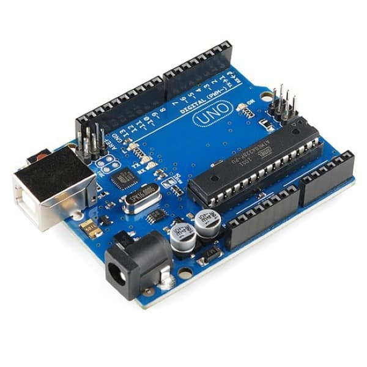

Resistores e código de cores
Os resistores são componentes essenciais para controlar a corrente em circuitos eletrônicos, e o código de cores é uma maneira prática de identificar seu valor e tolerância. Para interpretar o código de cores corretamente, basta lembrar que as duas primeiras faixas representam os dígitos iniciais do valor, a terceira faixa é o multiplicador, e a quarta faixa indica a tolerância. Em resistores de 5 faixas, há uma faixa adicional para um maior detalhamento da resistência.

Circuito com 7 segmentos
placa arduíno
A Placa Arduino é uma plataforma de prototipagem eletrônica de código aberto que permite aos usuários criar e controlar dispositivos eletrônicos, como sensores, motores, LEDs, displays, entre outros, com facilidade. Ela é baseada em microcontroladores (chips que controlam o funcionamento dos circuitos) e permite programar a placa para executar ações em resposta a entradas ou controlar saídas.
programa no IDE arduíno

Entrada analógica no arduíno

Entrada digital no arduíno

Multímetro
O multímetro é um equipamento essencial para qualquer técnico, engenheiro ou hobbyista que trabalha com eletrônica, pois permite diagnosticar problemas e medir parâmetros importantes em circuitos elétricos e eletrônicos. Ele é utilizado para medir tensão, corrente, resistência, testar continuidade de fios e componentes, e até mesmo testar diodos e transistores, tornando-o um instrumento versátil e fundamental em diversas aplicações.